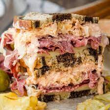

Reuben Sandwich

Description
What is a Reuben Sandwich? A classic Reuben is a sandwich consisting of
corned beef, Swiss cheese, sauerkraut, Russian dressing between slices of
rye bread that is grilled until the bread is crispy and the cheese melts.
Though the sandwich may be enjoyed hot or cold, It is best served HOT
Ingredients
- 2 Tablespoons butter
- 8 slices rye break
- 8 slices deli sliced corned beef
- 8 slices Swiss cheese
- 1 cup sauerkraut, drained
- 1/2 cup Thousand Island dressing
Steps
- Preheat a large skillet or griddle on medium heat.
- Lightly butter one side of bread slices.
Spread non-buttered sides with Thousand Island dressing.
On 4 bread slices, layer 1 slice Swiss cheese, 2 slices corned beef,
1/4 cup sauerkraut and second slice of Swiss cheese.
Top with remaining bread slices, buttered sides out.
- Grill sandwiches until both sides are golden brown,
about 5 minutes per side. Serve hot.